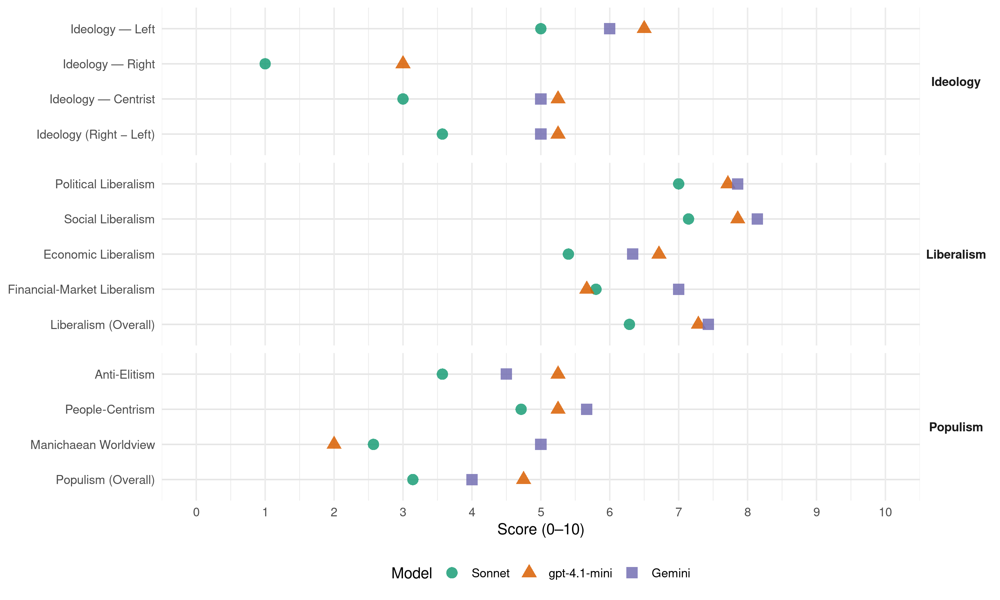

(Brazil, 2014)
manifesto_id 180240_201410
Get full text: This site shows derived annotations and short verbatim quotes only. The full manifesto text is © Manifesto Project / WZB — obtain it via manifesto-project.wzb.eu using the manifesto_id above.
Headline scores
| Dimension | Sonnet | gpt-4.1-mini | Gemini |
|---|---|---|---|
| Populism (Overall) | 3.1 | 4.8 | 4.0 |
| Anti-Elitism | 3.6 | 5.2 | 4.5 |
| People-Centrism | 4.7 | 5.2 | 5.7 |
| Manichaean Worldview | 2.6 | 2.0 | 5.0 |
| Ideology (Right − Left) | 3.6 | 5.2 | 5.0 |
| Liberalism (Overall) | 6.3 | 7.3 | 7.4 |
| Political Liberalism | 7.0 | 7.7 | 7.9 |
| Social Liberalism | 7.1 | 7.9 | 8.1 |
| Economic Liberalism | 5.4 | 6.7 | 6.3 |
| Financial-Market Liberalism | 5.8 | 5.7 | 7.0 |
Evidence per dimension
Economic Liberalism
Gemini · score 7.0 · verified · chunk 1
“simplificar a estrutura tributária, reduzindo o número de impostos”
Diante disso, propõe-se simplificar a estrutura tributária, reduzindo o número de impostos e tornan-do os procedimentos mais simples.
Gemini · score 8.0 · verified · chunk 2
“iniciativa privada com a forte presença”
que ele seja realizado pela iniciativa privada com a forte presença do Estado na coordenação
Gemini · score 7.0 · verified · chunk 3
“potencial competitivo com sustentabilidade”
Apesar disso, o país detém apenas 4% do mercado mundial de produtos florestais. Talvez em nenhum outro setor da economia o Brasil esteja tão distante de seu pleno potencial competitivo com sustentabilidade.
Gemini · score 6.0 · verified · chunk 4
“renovar as relações entre Estado e mercado”
O desperdício de investimentos. A necessidade de repensar e renovar as relações entre Estado e mercado. O estudo Economia de Exposições
Gemini · score 7.0 · verified · chunk 5
“introduzindo princípios de mercado na provisão”
de centralização da política habitacional dos governos militares, descentralizando a alocação dos recursos federais e introduzindo princípios de mercado na provisão de serviços, com o objetivo de abrir espaço para a participação do setor privado
Gemini · score 3.0 · verified · chunk 7
“não gerido pela iniciativa privada”
luta por um transporte efetivamente público, gratuito para o conjunto da população e não gerido pela iniciativa privada.
gpt-4.1-mini · score 7.0 · verified · chunk 1
“reduzir normas para os setores produtivos; fortalecer e dar independência às agências reguladoras”
Será objetivo do governo reduzir normas para os setores produtivos; fortalecer e dar independência às agências reguladoras; deixar a economia respirar.
gpt-4.1-mini · score 7.0 · verified · chunk 2
“mercado, competição, negócios, empresa, tributação, comércio, regulação, privatização”
A política industrial brasileira, decididamente, ainda não colaborou. Ela tem pontos positivos, porém localizados e parciais. Na atualidade, a orientação excessivamente defensiva e protecionista é o que mais a caracteriza.
gpt-4.1-mini · score 7.0 · verified · chunk 3
“A economia criativa, conceito criado há 20 anos, tem forte vinculação com os direitos de propriedade intelectual”
A economia criativa, conceito criado há 20 anos, tem forte vinculação com os direitos de propriedade intelectual, sendo uma fusão da economia da cultura (direitos autorais) com a economia do conhecimento (direitos industriais).
gpt-4.1-mini · score 6.0 · verified · chunk 4
“estimular a microempresa, grande geradora de empregos”
Nesse sentido, o estímulo à microempresa, grande geradora de empregos e de dinamismo locais, tem de ser considerado uma iniciativa importante.
gpt-4.1-mini · score 7.0 · verified · chunk 5
“A coligação Unidos pelo Brasil propõe manter, ampliar e aprimorar o programa MCMV”
A coligação Unidos pelo Brasil propõe manter, ampliar e aprimorar o programa MCMV. Vamos construir 4 milhões de moradias até 2018, mantendo o subsídio para as faixas de baixa renda. Para isso, reforçaremos as condições de financiamento às famílias e abriremos um processo de diálogo que avalie a possibilidade de incluir outras instituições financeiras, além das já participantes, no programa.
gpt-4.1-mini · score 7.0 · verified · chunk 6
“A coligação Unidos pelo Brasil entende que construção de uma sociedade sustentável e moderna requer atenção especial à discriminação de gênero e vai promover e defender os direitos políticos e civis das mulheres.”
A coligação Unidos pelo Brasil entende que construção de uma sociedade sustentável e moderna requer atenção especial à discriminação de gênero e vai promover e defender os direitos políticos e civis das mulheres. Acreditamos igualmente que investir na mulher beneficia toda a família. Quando se investe na saúde, na educação e na geração de renda das mulheres,
gpt-4.1-mini · score 6.0 · verified · chunk 7
“tarifa zero para toda a população, a municipalização do sistema de transportes”
Dentre suas propostas, destacamse a tarifa zero para toda a população, a municipalização do sistema de transportes, e a criação de um Fundo Municipal de Transporte Coletivo, a ser gerido com participação popular.
Sonnet · score 6.0 · verified · chunk 1
“simplificar a estrutura tributária, reduzindo o número de impostos”
propõe-se simplificar a estrutura tributária, reduzindo o número de impostos e tornando os procedimentos mais simples
Sonnet · score 6.0 · verified · chunk 2
“parcerias público-privadas (PPPs) e a licitações de concessões”
recorrer mais fortemente a parcerias público-privadas (PPPs) e a licitações de concessões, evitando preconceitos e vieses anacrônicos
Sonnet · score 6.0 · verified · chunk 3
“potencial competitivo com sustentabilidade”
Talvez em nenhum outro setor da economia o Brasil esteja tão distante de seu pleno potencial competitivo com sustentabilidade.
Sonnet · score 5.0 · mixed · chunk 4
“relações entre Estado e mercado”
A necessidade de repensar e renovar as relações entre Estado e mercado
Sonnet · score 5.0 · mixed · chunk 5
“participação do setor privado”
A participação do setor privado para alcançar metas do governo federal nas áreas de saneamento, abastecimento de água e destinação de resíduos sólidos precisa, portanto, ser enfrentada com urgência.
Sonnet · score 5.0 · verified · chunk 6
“Incentivar o empreendedorismo juvenil”
Incentivar o empreendedorismo juvenil por meio de suas diferentes dimensões: formação, incubadoras ligadas às universidades, empreendimentos profissionais.
Sonnet · score 4.0 · verified · chunk 7
“desregulamentação pura e simples do mercado de trabalho”
parece inadequada a reforma trabalhista que vise só à desregulamentação pura e simples do mercado de trabalho sem estabelecer condições para que a negociação coletiva
Financial-Market Liberalism
Gemini · score 8.0 · verified · chunk 2
“sistema de crédito privado, focando”
não inibidor do sistema de crédito privado, focando em negócios com as seguintes
Gemini · score 6.0 · verified · chunk 3
“Disponibilizar crédito para os empreendedores”
fornecer-lhes os instrumentos para que possam oferecer produtos e serviços de maior valor agregado. Disponibilizar crédito para os empreendedores criativos desprovidos de garantias ou avalistas
Gemini · score 7.0 · verified · chunk 4
“criação de fundos de risco para financiar”
estímulo, por meio do BNDES, Banco Central e mercado de capitais, à criação de fundos de risco para financiar empreendimentos inovadores em estágio inicial
Gemini · score 7.0 · verified · chunk 5
“coibir de modo efetivo a lavagem de dinheiro”
Crimes financeiros oCoibir de modo efetivo a lavagem de dinheiro e os circuitos financeiros do crime organizado no Brasil
gpt-4.1-mini · score 6.0 · verified · chunk 1
“equilibraremos os preços praticados por estatais para refletir custos e condições de mercado”
O novo governo eliminará a prática de usá-las como instrumento de política macroeconômica e equilibraremos os preços praticados por estatais para refletir custos e condições de mercado.
gpt-4.1-mini · score 6.0 · verified · chunk 2
“mercado de crédito eficiente, financiamento para empresas e indivíduos, redução do custo do crédito”
Projetos com maior potencial de retorno se viabilizam, e a poupança se transforma em investimento produtivo, por meio de melhor alocação de recursos. Tudo isso gera emprego e eleva o potencial de crescimento da economia.
gpt-4.1-mini · score 5.0 · verified · chunk 4
“renúncias fiscais, beneficia pessoas físicas e jurídicas”
Apesar do SUS, mais de 48 milhões de brasileiros, segundo dados da Agência Nacional de Saúde Suplementar (ANS), são usuários de planos de saúde e recebem desconto no imposto de renda pelo que pagam a seguradoras e operadoras de saúde.
Sonnet · score 7.0 · verified · chunk 1
“independência do Banco Central”
Assegurar a independência do Banco Central o mais rapidamente possível, de forma institucional, para que ele possa praticar a política monetária necessária ao controle da inflação
Sonnet · score 7.0 · verified · chunk 2
“eliminar os direcionamentos obrigatórios”
gradualmente, se eliminem os direcionamentos obrigatórios, e regulamentaremos a garantia guarda-chuva
Sonnet · score 5.0 · verified · chunk 3
“crédito para os empreendedores criativos”
Disponibilizar crédito para os empreendedores criativos desprovidos de garantias ou avalistas, por meio de bancos públicos e de fundos de aval que induzam o sistema financeiro a perceber oportunidades.
Sonnet · score 5.0 · verified · chunk 4
“mercado de capitais, à criação de fundos de risco”
estímulo, por meio do BNDES, Banco Central e mercado de capitais, à criação de fundos de risco para financiar empreendimentos inovadores
Sonnet · score 5.0 · verified · chunk 5
“circuitos financeiros do crime organizado”
Coibir de modo efetivo a lavagem de dinheiro e os circuitos financeiros do crime organizado no Brasil e no exterior.
Political Liberalism
Gemini · score 8.0 · verified · chunk 1
“devolver à sociedade a confiança na democracia”
Partimos da necessidade de devolver à sociedade a confiança na democracia e, para tanto, o primeiro desafio é superar
Gemini · score 7.0 · verified · chunk 2
“estabilidade institucional decorrente dos violentos”
afastar do horizonte a ameaça à estabilidade institucional decorrente dos violentos conflitos pela posse
Gemini · score 8.0 · verified · chunk 3
“assegurar a total liberdade de expressão”
canais de participação permanentes e plurais. Assegurar a total liberdade de expressão e criação artística, sem censura ou critérios de
Gemini · score 8.0 · verified · chunk 4
“Garantir transparência nos processos internos”
Mudar os mecanismos de composição de sua diretoria colegiada. Garantir transparência nos processos internos. Rediscutir os critérios para selecionar filmes
Gemini · score 8.0 · verified · chunk 5
“exercício em uma sociedade democrática”
compreensão das funções de polícia e seu exercício em uma sociedade democrática, plural e complexa.
Gemini · score 8.0 · verified · chunk 6
“democracia mais representative e aberta”
Só assim teremos uma democracia mais representative e aberta à participação de todos
Gemini · score 8.0 · verified · chunk 7
“novas faces da participação democrática”
A sociedade como protagonista. O florescimento de movimentos por cidadania para todos. As novas faces da participação democrática. O equívoco de criminalizar manifestações legítimas.
gpt-4.1-mini · score 8.0 · verified · chunk 1
“devolver à sociedade a confiança na democracia”
São muitas as frentes a exigir transformação, para devolver à sociedade a confiança na democracia e superar a crise de representação atual.
gpt-4.1-mini · score 7.0 · verified · chunk 2
“democracia, direitos, eleições, tribunais, mídia, governo, parlamento”
A destinação de recursos e a alocação de pessoas qualificadas para essa atividade têm estreita relação com o crescimento sustentável e são estratégicas para elevar o bem-estar de toda a população.
gpt-4.1-mini · score 8.0 · verified · chunk 3
“Garantir a total liberdade de expressão e criação artística, sem censura”
Assegurar a total liberdade de expressão e criação artística, sem censura ou critérios de valor, e estimular de modo permanente as práticas cultu-rais espontâneas e autônomas.
gpt-4.1-mini · score 7.0 · verified · chunk 4
“Constituição Federal de 1988”
A Constituição Federal de 1988 foi a primeira tentativa robusta de construir um Sistema de Proteção Social no Brasil. Nos anos 90, alguns programas sociais visaram aos trabalhadores de baixa renda, com soluções tópicas e temporárias.
gpt-4.1-mini · score 8.0 · verified · chunk 5
“A Constituição de 1988, em seu Artigo 182, garantiu aos brasileiros a função social das cidades”
A Constituição de 1988, em seu Artigo 182, garantiu aos brasileiros a função social das cidades, na qual se insere a mobilidade. Melhorar a qualidade de vida em nossas cidades, portanto, requer que unamos os poderes públicos, as organizações da sociedade civil e o setor privado para atuar conjuntamente a fim de reorientar profundamente as políticas de transporte.
gpt-4.1-mini · score 8.0 · verified · chunk 6
“A cidadania está em permanente construção, é um ideal a conquistar e uma condição a aperfeiçoar.”
A cidadania está em permanente construção, é um ideal a conquistar e uma condição a aperfeiçoar. Alcança a plenitude quando os direitos civis, políticos, sociais e religiosos são garantidos a todos os cidadãos de um país. O primeiro artigo da Declaração Universal dos Direitos Humanos afirma que “todos os seres humanos nascem livres e iguais em dignidade e direitos”,
gpt-4.1-mini · score 8.0 · verified · chunk 7
“desenvolvimento da democracia brasileira após o período ditatorial”
O desenvolvimento da democracia brasileira após o período ditatorial criou um terreno fértil para novas formas de participar das decisões públicas.
Sonnet · score 8.0 · verified · chunk 1
“democratização da democracia”
Nossa proposta é fundar uma prática política diferenciada, de compromisso com a nação, de ‘democratização da democracia’
Sonnet · score 6.0 · verified · chunk 2
“transparência nos gastos públicos”
O povo brasileiro demanda transparência nos gastos públicos, assim como exige debate aberto sobre os legados econômico, cultural e social
Sonnet · score 7.0 · verified · chunk 3
“governança democrática, pautada por monitoramento”
O aprimoramento da gestão da educação nas diferentes instâncias de governo requer, portanto, que se implemente uma governança democrática, pautada por monitoramento e avaliação de resultados.
Sonnet · score 7.0 · verified · chunk 4
“democracia participativa e a transparência na gestão pública”
ferramentas governamentais que incentivem a democracia participativa e a transparência na gestão pública
Sonnet · score 6.0 · verified · chunk 5
“direitos humanos estão entrelaçados”
Para a coligação Unidos pelo Brasil, segurança pública e direitos humanos estão entrelaçados. O direito à vida, o direito à integridade física e o direito à segurança caminham juntos.
Sonnet · score 8.0 · verified · chunk 6
“direitos civis, políticos, sociais e religiosos são garantidos”
Alcança a plenitude quando os direitos civis, políticos, sociais e religiosos são garantidos a todos os cidadãos de um país.
Sonnet · score 7.0 · verified · chunk 7
“ampliar a democracia e a cidadania”
Tal mobilização permite ampliar a democracia e a cidadania para indivíduos e grupos que não conseguem se fazer representar
Liberalism (Overall)
Gemini · score 8.0 · verified · chunk 1
“devolver à sociedade a confiança na democracia”
Partimos da necessidade de devolver à sociedade a confiança na democracia e, para tanto, o primeiro desafio é superar
Gemini · score 8.0 · verified · chunk 2
“sistema de crédito privado, focando”
não inibidor do sistema de crédito privado, focando em negócios com as seguintes
Gemini · score 7.0 · verified · chunk 3
“assegurar a total liberdade de expressão”
canais de participação permanentes e plurais. Assegurar a total liberdade de expressão e criação artística, sem censura ou critérios de
Gemini · score 7.0 · verified · chunk 4
“renovar as relações entre Estado e mercado”
O desperdício de investimentos. A necessidade de repensar e renovar as relações entre Estado e mercado. O estudo Economia de Exposições
Gemini · score 8.0 · verified · chunk 5
“exercício em uma sociedade democrática”
compreensão das funções de polícia e seu exercício em uma sociedade democrática, plural e complexa.
Gemini · score 8.0 · verified · chunk 6
“democracia mais representative e aberta”
Só assim teremos uma democracia mais representative e aberta à participação de todos
Gemini · score 6.0 · verified · chunk 7
“novas faces da participação democrática”
A sociedade como protagonista. O florescimento de movimentos por cidadania para todos. As novas faces da participação democrática. O equívoco de criminalizar manifestações legítimas.
gpt-4.1-mini · score 7.0 · verified · chunk 1
“devolver à sociedade a confiança na democracia”
São muitas as frentes a exigir transformação, para devolver à sociedade a confiança na democracia e superar a crise de representação atual.
gpt-4.1-mini · score 7.0 · verified · chunk 2
“política industrial, tributação, comércio, crédito, infraestrutura, inovação”
A política industrial brasileira, decididamente, ainda não colaborou. Ela tem pontos positivos, porém localizados e parciais. Na atualidade, a orientação excessivamente defensiva e protecionista é o que mais a caracteriza.
gpt-4.1-mini · score 8.0 · verified · chunk 3
“Garantir a total liberdade de expressão e criação artística, sem censura”
Assegurar a total liberdade de expressão e criação artística, sem censura ou critérios de valor, e estimular de modo permanente as práticas cultu-rais espontâneas e autônomas.
gpt-4.1-mini · score 6.0 · verified · chunk 4
“Constituição Federal de 1988”
A Constituição Federal de 1988 foi a primeira tentativa robusta de construir um Sistema de Proteção Social no Brasil. Nos anos 90, alguns programas sociais visaram aos trabalhadores de baixa renda, com soluções tópicas e temporárias.
gpt-4.1-mini · score 8.0 · verified · chunk 5
“A Constituição de 1988, em seu Artigo 182, garantiu aos brasileiros a função social das cidades”
A Constituição de 1988, em seu Artigo 182, garantiu aos brasileiros a função social das cidades, na qual se insere a mobilidade. Melhorar a qualidade de vida em nossas cidades, portanto, requer que unamos os poderes públicos, as organizações da sociedade civil e o setor privado para atuar conjuntamente a fim de reorientar profundamente as políticas de transporte.
gpt-4.1-mini · score 8.0 · verified · chunk 6
“A cidadania está em permanente construção, é um ideal a conquistar e uma condição a aperfeiçoar.”
A cidadania está em permanente construção, é um ideal a conquistar e uma condição a aperfeiçoar. Alcança a plenitude quando os direitos civis, políticos, sociais e religiosos são garantidos a todos os cidadãos de um país. O primeiro artigo da Declaração Universal dos Direitos Humanos afirma que “todos os seres humanos nascem livres e iguais em dignidade e direitos”,
gpt-4.1-mini · score 7.0 · verified · chunk 7
“desenvolvimento da democracia brasileira após o período ditatorial”
O desenvolvimento da democracia brasileira após o período ditatorial criou um terreno fértil para novas formas de participar das decisões públicas.
Sonnet · score 7.0 · verified · chunk 1
“regras claras e justas e de segurança jurídica”
para que o país ingresse em uma nova era de crescimento sustentável, vamos estabelecer um ambiente de regras claras e justas e de segurança jurídica
Sonnet · score 6.0 · verified · chunk 2
“mercado livre de energia”
nossa coligação vai criar mecanismos de expansão do mercado livre de energia
Sonnet · score 6.0 · verified · chunk 3
“governança democrática, pautada por monitoramento”
O aprimoramento da gestão da educação nas diferentes instâncias de governo requer, portanto, que se implemente uma governança democrática, pautada por monitoramento e avaliação de resultados.
Sonnet · score 6.0 · verified · chunk 4
“democracia participativa e a transparência na gestão pública”
ferramentas governamentais que incentivem a democracia participativa e a transparência na gestão pública
Sonnet · score 6.0 · verified · chunk 5
“combatendo a discriminação racial, de gênero”
Implementar programas de integração social que estimulem o conhecimento da diversidade sociocultural brasileira, combatendo a discriminação racial, de gênero, de orientação sexual, religiosa, social e intergeracional.
Sonnet · score 7.0 · verified · chunk 6
“direitos civis, políticos, sociais e religiosos são garantidos”
Alcança a plenitude quando os direitos civis, políticos, sociais e religiosos são garantidos a todos os cidadãos de um país.
Sonnet · score 6.0 · verified · chunk 7
“segurança jurídica, indispensável aos investimentos”
dar maior efetividade aos direitos trabalhistas e à segurança jurídica, indispensável aos investimentos
Anti-Elitism
Gemini · score 6.0 · verified · chunk 1
“pelo fim da corrupção e do loteamento do Estado”
As instituições envelhecidas e a democracia de baixa qualidade. Pelo fim da corrupção e do loteamento do Estado. Com tantas mudanças em curso
Gemini · score 3.0 · verified · chunk 2
“aparelhamento político de seus órgãos”
não permitindo o aparelhamento político de seus órgãos (Incra, MDA etc.).
Gemini · score 5.0 · verified · chunk 3
“Sucessivos candidatos defendem a prioridade à educação”
aumenta a taxa de crescimento anual da renda per capita em 35%. Sucessivos candidatos defendem a prioridade à educação em discursos de campanha, mas, uma vez no governo
Gemini · score 5.0 · verified · chunk 4
“Ancine ter concentrado em poucas mãos”
Esse cenário se explica, em parte, pelo fato de a Ancine ter concentrado em poucas mãos o poder decisório sobre a política cinematográfica brasileira
Gemini · score 3.0 · verified · chunk 6
“incapacidade crônica do Estado”
Some-se a isso a incapacidade crônica do Estado (Executivo, Judiciário, Legislativo) de lidar
Gemini · score 5.0 · verified · chunk 7
“concentração de riqueza e da propriedade imobiliária nas mãos de poucas pessoas”
ocupação de áreas e prédios urbanos ociosos, para explicitar e desestabilizar a concentração de riqueza e da propriedade imobiliária nas mãos de poucas pessoas. Seu objetivo é democratizar o espaço urbano
gpt-4.1-mini · score 7.0 · verified · chunk 1
“práticas de clientelismo, nepotismo, populismo e outras formas de patrimonialismo”
As instituições políticas estão envelhecidas e tomadas de práticas de clientelismo, nepotismo, populismo e outras formas de patrimonialismo e de perpetuação no poder a qualquer custo.
gpt-4.1-mini · score 4.0 · verified · chunk 2
“aparelhamento político”
O Incra, corroído pela precarização e pelo aparelhamento político, já não consegue realizar nenhuma de suas funções: nem reforma agrária, nem gestão territorial.
gpt-4.1-mini · score 3.0 · verified · chunk 4
“a crise de representatividade do Sistema Nacional de Cultura”
A crise de representatividade do Sistema Nacional de Cultura (SNC), desde 2012 responsável pela promoção das políticas públicas, é outro capítulo da intrincada rede de deficiências da área.
gpt-4.1-mini · score 7.0 · verified · chunk 7
“explícito na oposição às desigualdades sociais e econômicas”
É fruto da oposição às desigualdades sociais e econômicas, decorre da conscientização de parcelas da população quanto a seus direitos e quanto ao dever que o Estado tem de garanti-los.
Sonnet · score 5.0 · verified · chunk 1
“clientelismo, nepotismo, populismo e outras formas de patrimonialismo”
as instituições políticas estão envelhecidas e tomadas de práticas de clientelismo, nepotismo, populismo e outras formas de patrimonialismo e de perpetuação no poder a qualquer custo
Sonnet · score 3.0 · verified · chunk 2
“acesso discricionário para as grandes empresas”
2) acesso discricionário para as grandes empresas a partir de bancos públicos; 3) custo do crédito muito elevado
Sonnet · score 3.0 · verified · chunk 3
“há um presidente com mais poderes que um ministro”
Esse cenário se explica, em parte, pelo fato de a Ancine ter concentrado em poucas mãos o poder decisório sobre a política cinematográfica brasileira: há um presidente com mais poderes que um ministro, e os demais diretores representam um único partido político.
Sonnet · score 4.0 · verified · chunk 4
“os lobbies para captar recursos”
Na música, continuam predominando os lobbies para captar recursos, e muito pouco se faz para favorecer a gravação
Sonnet · score 2.0 · verified · chunk 5
“abandono dos espaços e dos equipamentos públicos”
Vivemos um ambiente urbano de pobreza relacional, com abandono dos espaços e dos equipamentos públicos, aumento dos conflitos e até desinteresse pela política.
Sonnet · score 3.0 · verified · chunk 6
“incapacidade crônica do Estado (Executivo, Judiciário, Legislativo)”
Uma das dimensões mais flagrantes dessa realidade é a atuação da nossa Polícia Militar. Outras estatísticas refletem bem essa situação
Sonnet · score 5.0 · verified · chunk 7
“concentração de riqueza e da propriedade imobiliária nas mãos de poucas pessoas”
o movimento articula-se mediante a ocupação de áreas e prédios urbanos ociosos, para explicitar e desestabilizar a concentração de riqueza e da propriedade imobiliária nas mãos de poucas pessoas
Ideology — Centrist
Gemini · score 5.0 · verified · chunk 3
“Sucessivos candidatos defendem a prioridade à educação”
aumenta a taxa de crescimento anual da renda per capita em 35%. Sucessivos candidatos defendem a prioridade à educação em discursos de campanha, mas, uma vez no governo
Gemini · score 5.0 · verified · chunk 4
“Ancine ter concentrado em poucas mãos”
Esse cenário se explica, em parte, pelo fato de a Ancine ter concentrado em poucas mãos o poder decisório sobre a política cinematográfica brasileira
gpt-4.1-mini · score 6.0 · verified · chunk 1
“uma prática política diferenciada, de compromisso com a nação”
Nossa proposta é fundar uma prática política diferenciada, de compromisso com a nação, de “democratização da democracia”.
gpt-4.1-mini · score 5.0 · verified · chunk 2
“a coligação Unidos pelo Brasil entende que a reforma agrária exige que se expanda o foco de atuação do governo para esferas além da questão da justiça social”
A coligação Unidos pelo Brasil entende que a reforma agrária exige que se expanda o foco de atuação do governo para esferas além da questão da justiça social, da solução de conflitos territoriais agrários e da reversão do êxodo rural.
gpt-4.1-mini · score 4.0 · verified · chunk 4
“a crise de representatividade do Sistema Nacional de Cultura”
A crise de representatividade do Sistema Nacional de Cultura (SNC), desde 2012 responsável pela promoção das políticas públicas, é outro capítulo da intrincada rede de deficiências da área.
gpt-4.1-mini · score 6.0 · verified · chunk 7
“manifestações legítimas. O desenvolvimento da democracia brasileira”
O equívoco de criminalizar manifestações legítimas. O desenvolvimento da democracia brasileira após o período ditatorial criou um terreno fértil para novas formas de participar das decisões públicas.
Sonnet · score 4.0 · verified · chunk 1
“superação de uma velha polarização”
Estamos apresentando um roteiro para a superação de uma velha polarização que já não dá conta dos novos anseios da população
Sonnet · score 4.0 · verified · chunk 2
“reformular o modelo, tornando o sistema mais dinâmico, democrático e robusto”
Reformas no mercado de crédito: reformular o modelo, tornando o sistema mais dinâmico, democrático e robusto; desconcentrar o crédito corporativo
Sonnet · score 2.0 · verified · chunk 3
“participação da sociedade organizada”
contemplar a participação da sociedade organizada no âmbito de estados e municípios, com foco nas potencialidades e demandas educativas dos territórios.
Sonnet · score 3.0 · verified · chunk 4
“pensamos a economia a partir da cultura”
apontando para o sentido inverso: pensamos a economia a partir da cultura e dos valores culturais
Sonnet · score 3.0 · verified · chunk 5
“coligação Unidos pelo Brasil propõe”
Nesse cenário, a coligação Unidos pelo Brasil propõe um ambicioso programa de ampliação da rede hospitalar e da oferta de leitos, de maternidades e de policlínicas.
Sonnet · score 2.0 · verified · chunk 6
“democracia mais representative e aberta à participação”
Só assim teremos uma democracia mais representative e aberta à participação de todos os cidadãos.
Sonnet · score 3.0 · verified · chunk 7
“diálogo tripartite entre governo, trabalhadores e empresas”
Retomar o Foro Nacional do Trabalho para redesenhar o modelo de relações do trabalho pelo diálogo tripartite entre governo, trabalhadores e empresas
Ideology — Left
Gemini · score 6.0 · verified · chunk 1
“combater a concentração com programas e políticas”
Distribuição de riqueza e renda: combater a concentração com programas e políticas em todas as áreas do governo; enfrentar o fato
Gemini · score 6.0 · verified · chunk 2
“melhoria na distribuição de riqueza”
Para atingir os objetivos de melhoria na distribuição de riqueza e renda, a coligação
Gemini · score 5.0 · verified · chunk 6
“reduzir desigualdades econômicas, sociais”
ações sociais para reduzir desigualdades econômicas, sociais e culturais existentes no país
Gemini · score 7.0 · verified · chunk 7
“luta contra a especulação imobiliária”
Marcado pela luta contra a especulação imobiliária e contra a dificuldade de morar com dignidade
gpt-4.1-mini · score 7.0 · verified · chunk 1
“combater a concentração com programas e políticas em todas as áreas do governo”
Distribuição de riqueza e renda: combater a concentração com programas e políticas em todas as áreas do governo; enfrentar o fato de que a desigualdade atrasa o desenvolvimento e o crescimento da economia.
gpt-4.1-mini · score 6.0 · verified · chunk 2
“priorizar a qualidade do ensino público como estratégia de longo prazo e, a curto prazo, controlar a inflação; promover o crescimento sustentável; avançar na reforma tributária com maior justiça”
Para atingir os objetivos de melhoria na distribuição de riqueza e renda, a coligação Unidos pelo Brasil vai priorizar a qualidade do ensino público como estratégia de longo prazo e, a curto prazo, controlar a inflação; promover o crescimento sustentável; avançar na reforma tributária com maior justiça; ampliar o Bolsa Família para mais 10 milhões de famílias; valorizar o salário mínimo; aperfeiçoar os mecanismos de ação sindical; e reformular a estratégia agrária de tal maneira que cumpra seu papel de inclusão socioprodutiva; além de assegurar a universalização, o acesso e a permanência nos programas de saúde e assistência social.
gpt-4.1-mini · score 6.0 · verified · chunk 4
“transferência direta de renda para setores vulneráveis da população”
Nos anos 2000, a segunda geração de programas sociais foi marcada pela transferência direta de renda para setores vulneráveis da população. Originário do Bolsa Escola, o Bolsa Família é o símbolo desse momento.
gpt-4.1-mini · score 7.0 · verified · chunk 7
“luta contra a especulação imobiliária e contra a dificuldade de morar com dignidade”
O MTST, por sua vez, surgiu como um braço do MST, para atuar na democratização do espaço e na garantia de moradias urbanas. Marcado pela luta contra a especulação imobiliária e contra a dificuldade de morar com dignidade nas metrópoles,
Sonnet · score 5.0 · verified · chunk 1
“luta pela justiça social e pelo desenvolvimento”
a luta pela justiça social e pelo desenvolvimento com sustentabilidade como um de nossos principais objetivos
Sonnet · score 5.0 · verified · chunk 2
“ampliar o Bolsa Família para mais 10 milhões”
ampliar o Bolsa Família para mais 10 milhões de famílias; valorizar o salário mínimo; aperfeiçoar os mecanismos de ação sindical
Sonnet · score 3.0 · verified · chunk 3
“enfrentar as desigualdades étnicas e sociais”
Acreditamos que a sociedade brasileira só alcançará um padrão de educação de qualidade para todos quando enfrentar as desigualdades étnicas e sociais, as diferenças entre cidade e campo
Sonnet · score 5.0 · verified · chunk 4
“combate das desigualdades, para a melhoria da distribuição de renda”
As políticas sociais devem contribuir de modo decisivo para o combate das desigualdades, para a melhoria da distribuição de renda e de riqueza
Sonnet · score 5.0 · verified · chunk 5
“Combater as desigualdades no acesso aos serviços”
Rejeitar qualquer Desvinculação de Receitas da União para assegurar a manutenção das fontes orçamentárias da Seguridade Social. Combater as desigualdades no acesso aos serviços.
Sonnet · score 5.0 · verified · chunk 6
“reduzir desigualdades econômicas, sociais e culturais”
Apoiar a formulação, a implementação e a avaliação de políticas e ações sociais para reduzir desigualdades econômicas, sociais e culturais existentes no país
Sonnet · score 7.0 · verified · chunk 7
“reforma agrária, redução da jornada sem redução de salários”
reivindicar a revalorização das aposentadorias e pensões, alternativas ao fator previdenciário, reforma agrária, redução da jornada sem redução de salários
Ideology (Right − Left)
Gemini · score 6.0 · verified · chunk 1
“combater a concentração com programas e políticas”
Distribuição de riqueza e renda: combater a concentração com programas e políticas em todas as áreas do governo; enfrentar o fato
Gemini · score 5.0 · verified · chunk 2
“melhoria na distribuição de riqueza”
Para atingir os objetivos de melhoria na distribuição de riqueza e renda, a coligação
Gemini · score 5.0 · verified · chunk 3
“Sucessivos candidatos defendem a prioridade à educação”
aumenta a taxa de crescimento anual da renda per capita em 35%. Sucessivos candidatos defendem a prioridade à educação em discursos de campanha, mas, uma vez no governo
Gemini · score 5.0 · verified · chunk 4
“Ancine ter concentrado em poucas mãos”
Esse cenário se explica, em parte, pelo fato de a Ancine ter concentrado em poucas mãos o poder decisório sobre a política cinematográfica brasileira
Gemini · score 3.0 · verified · chunk 6
“reduzir desigualdades econômicas, sociais”
ações sociais para reduzir desigualdades econômicas, sociais e culturais existentes no país
Gemini · score 6.0 · verified · chunk 7
“luta contra a especulação imobiliária”
Marcado pela luta contra a especulação imobiliária e contra a dificuldade de morar com dignidade
gpt-4.1-mini · score 6.0 · verified · chunk 1
“uma prática política diferenciada, de compromisso com a nação”
Nossa proposta é fundar uma prática política diferenciada, de compromisso com a nação, de “democratização da democracia”.
gpt-4.1-mini · score 5.0 · verified · chunk 2
“priorizar a qualidade do ensino público como estratégia de longo prazo e, a curto prazo, controlar a inflação; promover o crescimento sustentável; avançar na reforma tributária com maior justiça”
Para atingir os objetivos de melhoria na distribuição de riqueza e renda, a coligação Unidos pelo Brasil vai priorizar a qualidade do ensino público como estratégia de longo prazo e, a curto prazo, controlar a inflação; promover o crescimento sustentável; avançar na reforma tributária com maior justiça; ampliar o Bolsa Família para mais 10 milhões de famílias; valorizar o salário mínimo; aperfeiçoar os mecanismos de ação sindical; e reformular a estratégia agrária de tal maneira que cumpra seu papel de inclusão socioprodutiva; além de assegurar a universalização, o acesso e a permanência nos programas de saúde e assistência social.
gpt-4.1-mini · score 4.0 · verified · chunk 4
“a crise de representatividade do Sistema Nacional de Cultura”
A crise de representatividade do Sistema Nacional de Cultura (SNC), desde 2012 responsável pela promoção das políticas públicas, é outro capítulo da intrincada rede de deficiências da área.
gpt-4.1-mini · score 6.0 · verified · chunk 7
“sociedade civil consolidou-se como grande protagonista nas lutas por cidadania”
Desta forma, a sociedade civil consolidou-se como grande protagonista nas lutas por cidadania, conseguiu se fazer ouvir por organizações políticas e governos.
Sonnet · score 3.0 · verified · chunk 1
“socialismo democrático que inspira as propostas”
Assegurar o bem-estar e a melhoria de vida dos trabalhadores é uma bandeira importante do socialismo democrático que inspira as propostas da coligação Unidos pelo Brasil
Sonnet · score 3.0 · verified · chunk 2
“ampliar o Bolsa Família para mais 10 milhões”
ampliar o Bolsa Família para mais 10 milhões de famílias; valorizar o salário mínimo; aperfeiçoar os mecanismos de ação sindical
Sonnet · score 2.0 · verified · chunk 3
“enfrentar as desigualdades étnicas e sociais”
Acreditamos que a sociedade brasileira só alcançará um padrão de educação de qualidade para todos quando enfrentar as desigualdades étnicas e sociais
Sonnet · score 4.0 · verified · chunk 4
“combate das desigualdades, para a melhoria da distribuição de renda”
As políticas sociais devem contribuir de modo decisivo para o combate das desigualdades, para a melhoria da distribuição de renda e de riqueza
Sonnet · score 3.0 · verified · chunk 5
“Combater as desigualdades no acesso aos serviços”
Rejeitar qualquer Desvinculação de Receitas da União para assegurar a manutenção das fontes orçamentárias da Seguridade Social. Combater as desigualdades no acesso aos serviços.
Sonnet · score 4.0 · verified · chunk 6
“reduzir desigualdades econômicas, sociais e culturais”
Apoiar a formulação, a implementação e a avaliação de políticas e ações sociais para reduzir desigualdades econômicas, sociais e culturais existentes no país, priorizando as necessidades dos grupos socialmente vulneráveis.
Sonnet · score 6.0 · verified · chunk 7
“democratizar as relações de trabalho”
Uma reforma sindical que pretenda democratizar as relações de trabalho não pode limitar-se a introduzir a livre negociação
Ideology — Right
gpt-4.1-mini · score 3.0 · verified · chunk 2
“priorizar, ao fazer novos assentamentos, a proximidade com as cidades médias do interior”
Priorizar, ao fazer novos assentamentos, a proximidade com as cidades médias do interior, que podem ser a base tanto para polos regionais como para oferta de serviços vinculados à atividade rural.
Sonnet · score 1.0 · verified · chunk 1
“independência nacional”
A República Federativa do Brasil rege-se nas suas relações internacionais pelos seguintes princípios: I independência nacional
Sonnet · score 1.0 · verified · chunk 3
“identidade nacional”
No Estado Novo (1937–1945), elas fizeram parte de uma estratégia para superar o ‘atraso’ da República Velha e para construir uma identidade nacional.
Sonnet · score 1.0 · verified · chunk 5
“policiamento de fronteiras”
Organizar de forma efetiva o policiamento de fronteiras, em particular das terrestres, inclusive atribuindo à PF a responsabilidade também por esse monitoramento, ao lado das Forças Armadas.
Sonnet · score 1.0 · verified · chunk 6
“povos indígenas e povos e comunidades tradicionais”
pretendemos continuar em diálogo estreito com movimentos sociais, associações de moradores, uniões e federações que representam segmentos populares, organizações comunitárias, conselhos tutelares, coletivos voltados a questões urbanas e de transporte, o movimento estudantil, povos indígenas e povos e comunidades tradicionais
Sonnet · score 1.0 · verified · chunk 7
“índios e pessoas com deficiência”
incorpore as lutas específicas de mulheres, jovens, negros, aposentados, idosos, homossexuais, índios e pessoas com deficiência
Manichaean Worldview
Gemini · score 5.0 · verified · chunk 1
“uma política destrutiva, polarizada e em bases patrimonialistas”
já não respondem aos anseios da sociedade diante do Estado. A cristalização de uma política destrutiva, polarizada e em bases patrimonialistas tirou a vitalidade
gpt-4.1-mini · score 5.0 · mixed · chunk 1
“fim da corrupção e do loteamento do Estado”
Pelo fim da corrupção e do loteamento do Estado. Com tantas mudanças em curso, as instituições políticas estão envelhecidas e tomadas de práticas de clientelismo, nepotismo, populismo e outras formas de patrimonialismo.
gpt-4.1-mini · score 2.0 · verified · chunk 4
“exclusão social tampouco é uma categoria homogênea”
A exclusão social tampouco é uma categoria homogênea. Existem nela importantes gradações. Há indivíduos na extrema exclusão, como a população de rua, que, por uma série de fatores, perdeu os vínculos com a família, a comunidade e a sociedade.
gpt-4.1-mini · score 5.0 · mixed · chunk 7
“combater a repressão e a criminalização de movimentos sociais e populares”
Combater a repressão e a criminalização de movimentos sociais e populares, pela implantação de uma Política Pública Participativa de Inteligência Cidadã, Segurança Popular e Defesa Social.
Sonnet · score 3.0 · verified · chunk 1
“política destrutiva, polarizada e em bases patrimonialistas”
A cristalização de uma política destrutiva, polarizada e em bases patrimonialistas tirou a vitalidade de nosso desenvolvimento
Sonnet · score 2.0 · verified · chunk 2
“Incra, corroído pela precarização e pelo aparelhamento político”
O Incra, corroído pela precarização e pelo aparelhamento político, já não consegue realizar nenhuma de suas funções
Sonnet · score 2.0 · verified · chunk 3
“avanços estagnaram nos últimos três anos”
Porém, os avanços estagnaram nos últimos três anos e, de fato, já há indícios de regressão nessas conquistas.
Sonnet · score 3.0 · verified · chunk 4
“Grandes empresas, concentradas regionalmente, escolhem os projetos”
Grandes empresas, concentradas regionalmente, escolhem os projetos, associam suas marcas a eles, mas não investem de fato
Sonnet · score 2.0 · verified · chunk 5
“exclusão social, a violência e todas as assimetrias”
É no território urbano – com sua taxa de ocupação de 85% em contraste com uma completa ausência de planejamento – que se materializam a exclusão social, a violência e todas as assimetrias historicamente presentes em nossa formação como país.
Sonnet · score 2.0 · verified · chunk 6
“racismo ‘à brasileira’ tende a ser mascarado e negado”
Um grande problema enfrentado pela população negra é que o racismo ‘à brasileira’ tende a ser mascarado e negado. Ninguém admite ser racista.
Sonnet · score 4.0 · verified · chunk 7
“luta contra a especulação imobiliária”
Marcado pela luta contra a especulação imobiliária e contra a dificuldade de morar com dignidade nas metrópoles, o movimento articula-se mediante a ocupação de áreas
People-Centrism
Gemini · score 7.0 · verified · chunk 1
“afinadas com os sonhos do povo brasileiro”
revela-se a trilha que nossa coligação percorre para chegar às melhores soluções, afinadas com os sonhos do povo brasileiro. Nenhuma mudança acontecerá
Gemini · score 4.0 · verified · chunk 6
“mosaico que é o povo brasileiro”
são parte integrante do mosaico que é o povo brasileiro e merecem atenção especial
Gemini · score 6.0 · verified · chunk 7
“protagonizados pelas camadas populares”
trata-se de movimentos protagonizados pelas camadas populares, compostas por empregados urbanos e rurais
gpt-4.1-mini · score 6.0 · verified · chunk 1
“o povo cultiva pelos que, ao representá-lo, sabem interpretar os seus sonhos”
revelou-se o reconhecimento íntimo que o povo cultiva pelos que, ao representá-lo, sabem interpretar os seus sonhos e despertar suas esperanças.
gpt-4.1-mini · score 5.0 · verified · chunk 2
“a coligação Unidos pelo Brasil entende que a reforma agrária exige que se expanda o foco de atuação do governo para esferas além da questão da justiça social”
A coligação Unidos pelo Brasil entende que a reforma agrária exige que se expanda o foco de atuação do governo para esferas além da questão da justiça social, da solução de conflitos territoriais agrários e da reversão do êxodo rural.
gpt-4.1-mini · score 2.0 · verified · chunk 4
“envolver a sociedade na luta contra a pobreza”
Estimular parcerias público-privadas para estruturar e executar programas sociais integrados. Envolver a sociedade na luta contra a pobreza também pela via do empreendedorismo, por meio de projetos de educação, capacitação e orientação empresarial.
gpt-4.1-mini · score 8.0 · verified · chunk 7
“sociedade civil consolidou-se como grande protagonista nas lutas por cidadania”
Desta forma, a sociedade civil consolidou-se como grande protagonista nas lutas por cidadania, conseguiu se fazer ouvir por organizações políticas e governos.
Sonnet · score 6.0 · verified · chunk 1
“afinadas com os sonhos do povo brasileiro”
revela-se a trilha que nossa coligação percorre para chegar às melhores soluções, afinadas com os sonhos do povo brasileiro
Sonnet · score 4.0 · verified · chunk 2
“bem-estar da população”
viabiliza a aquisição de bens e serviços de grande impacto no bem-estar da população, como moradia e educação
Sonnet · score 3.0 · verified · chunk 3
“educação de qualidade para todos”
Acreditamos que a sociedade brasileira só alcançará um padrão de educação de qualidade para todos quando enfrentar as desigualdades étnicas e sociais
Sonnet · score 4.0 · verified · chunk 4
“direito de cada um de nós”
a Constituição Brasileira declarou dever do Estado fomentar as práticas desportivas no país como direito de cada um de nós
Sonnet · score 4.0 · verified · chunk 5
“Precisamos desenvolver cidades saudáveis, democráticas e seguras”
É urgente a intervenção nas áreas urbanas para melhorar a qualidade de vida, integrando esforços de educação, saúde, saneamento, lazer, mobilidade e segurança. Precisamos desenvolver cidades saudáveis, democráticas e seguras.
Sonnet · score 5.0 · verified · chunk 6
“a sociedade assumiu o protagonismo na busca por direitos”
Floresceram associações comunitárias, redes solidárias, organizações do terceiro setor voltadas aos direitos humanos, entre outras. Desta forma, a sociedade civil consolidou-se como grande protagonista nas lutas por cidadania
Sonnet · score 7.0 · verified · chunk 7
“camadas populares, compostas por empregados urbanos e rurais”
trata-se de movimentos protagonizados pelas camadas populares, compostas por empregados urbanos e rurais, desempregados, artesãos, pequenos comerciantes
Populism (Overall)
Gemini · score 6.0 · verified · chunk 1
“pelo fim da corrupção e do loteamento do Estado”
As instituições envelhecidas e a democracia de baixa qualidade. Pelo fim da corrupção e do loteamento do Estado. Com tantas mudanças em curso
Gemini · score 2.0 · verified · chunk 2
“aparelhamento político de seus órgãos”
não permitindo o aparelhamento político de seus órgãos (Incra, MDA etc.).
Gemini · score 5.0 · verified · chunk 3
“Sucessivos candidatos defendem a prioridade à educação”
aumenta a taxa de crescimento anual da renda per capita em 35%. Sucessivos candidatos defendem a prioridade à educação em discursos de campanha, mas, uma vez no governo
Gemini · score 5.0 · verified · chunk 4
“Ancine ter concentrado em poucas mãos”
Esse cenário se explica, em parte, pelo fato de a Ancine ter concentrado em poucas mãos o poder decisório sobre a política cinematográfica brasileira
Gemini · score 2.0 · verified · chunk 6
“incapacidade crônica do Estado”
Some-se a isso a incapacidade crônica do Estado (Executivo, Judiciário, Legislativo) de lidar
Gemini · score 4.0 · verified · chunk 7
“protagonizados pelas camadas populares”
trata-se de movimentos protagonizados pelas camadas populares, compostas por empregados urbanos e rurais
gpt-4.1-mini · score 6.0 · verified · chunk 1
“práticas de clientelismo, nepotismo, populismo e outras formas de patrimonialismo”
As instituições políticas estão envelhecidas e tomadas de práticas de clientelismo, nepotismo, populismo e outras formas de patrimonialismo e de perpetuação no poder a qualquer custo.
gpt-4.1-mini · score 4.0 · verified · chunk 2
“aparelhamento político”
O Incra, corroído pela precarização e pelo aparelhamento político, já não consegue realizar nenhuma de suas funções: nem reforma agrária, nem gestão territorial.
gpt-4.1-mini · score 2.0 · verified · chunk 4
“a crise de representatividade do Sistema Nacional de Cultura”
A crise de representatividade do Sistema Nacional de Cultura (SNC), desde 2012 responsável pela promoção das políticas públicas, é outro capítulo da intrincada rede de deficiências da área.
gpt-4.1-mini · score 7.0 · verified · chunk 7
“sociedade civil consolidou-se como grande protagonista nas lutas por cidadania”
Desta forma, a sociedade civil consolidou-se como grande protagonista nas lutas por cidadania, conseguiu se fazer ouvir por organizações políticas e governos.
Sonnet · score 4.0 · verified · chunk 1
“devolver ao cidadão sua capacidade de exercer influência”
Reformar o sistema de financiamento político-partidário requer, enfim, devolver ao cidadão sua capacidade de exercer influência nas instâncias de escolha política dos representantes
Sonnet · score 3.0 · verified · chunk 2
“acesso discricionário para as grandes empresas”
2) acesso discricionário para as grandes empresas a partir de bancos públicos; 3) custo do crédito muito elevado
Sonnet · score 2.0 · verified · chunk 3
“concentrado em poucas mãos o poder decisório”
pelo fato de a Ancine ter concentrado em poucas mãos o poder decisório sobre a política cinematográfica brasileira
Sonnet · score 3.0 · verified · chunk 4
“os lobbies para captar recursos”
Na música, continuam predominando os lobbies para captar recursos, e muito pouco se faz para favorecer a gravação
Sonnet · score 2.0 · verified · chunk 5
“Precisamos desenvolver cidades saudáveis, democráticas e seguras”
É urgente a intervenção nas áreas urbanas para melhorar a qualidade de vida, integrando esforços de educação, saúde, saneamento, lazer, mobilidade e segurança. Precisamos desenvolver cidades saudáticas, democráticas e seguras.
Sonnet · score 3.0 · verified · chunk 6
“incapacidade crônica do Estado (Executivo, Judiciário, Legislativo)”
Some-se a isso a incapacidade crônica do Estado (Executivo, Judiciário, Legislativo) de lidar com os mencionados fenômenos.
Sonnet · score 5.0 · verified · chunk 7
“excluídos do processo”
democratizar o espaço urbano e levar a cidadania aos indivíduos que, até então, estavam excluídos do processo
Social Liberalism